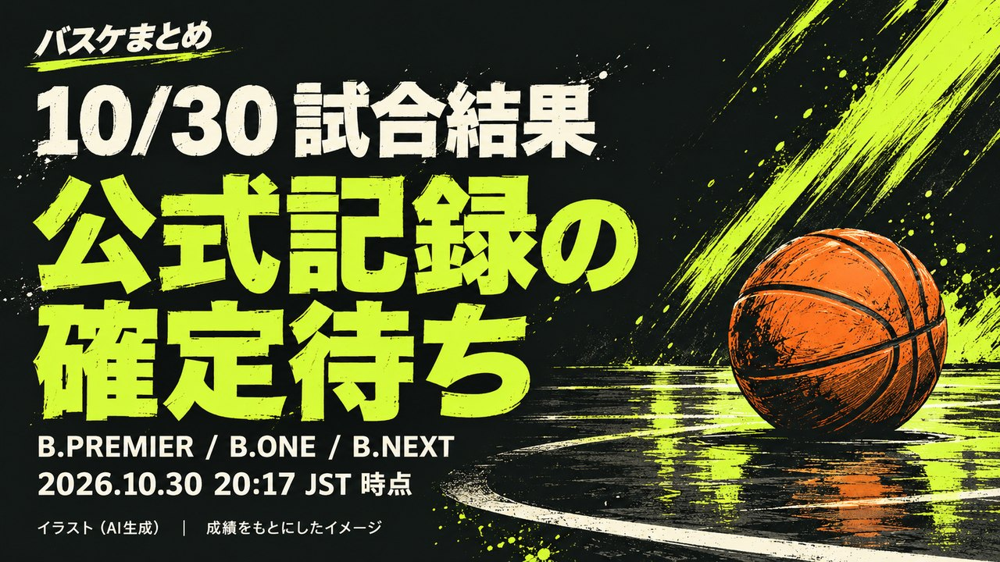

10/30 試合結果（公式記録の確定待ち）

試合結果
各試合の状態は 2026-10-30 21:22 JST 時点の公式記録です（試合前／開始・公式記録未確定／終了）。
B.PREMIER
信州—京都19:05 開始・公式記録未確定秋田—A千葉19:30 開始・公式記録未確定名古屋D—滋賀19:35 開始・公式記録未確定B.ONE
東京U—静岡19:05 開始・公式記録未確定愛媛—香川19:05 開始・公式記録未確定B.NEXT
湘南—品川19:05 開始・公式記録未確定試合結果 ／ 当日の EFF
当日のEFF・ポジション別TOP3
実際に出場した選手・公式試合スタッツ
B.PREMIER
全試合の公式記録確定待ち。確定後に掲載します。
B.ONE
全試合の公式記録確定待ち。確定後に掲載します。
B.NEXT
全試合の公式記録確定待ち。確定後に掲載します。
試合前 ／ 今季平均 EFF
出場予定選手（登録選手）のベスト5
対象日：2026-10-30
B.PREMIER
選手データ確認中：IL profile verification incomplete: Official fetch budget exhausted; prior data retained; Official fetch budget exhausted; prior data retained
B.ONE
ベスト5
| 位置 | 選手・所属 | 平均EFF | 試合数 |
|---|---|---|---|
| PG | 山本 愛哉 静岡 | 15.4 | 10 |
| SG | 松本 礼太 香川 | 15.5 | 2 |
| SF | トレダリアス・マカラム 静岡 | 24.3 | 10 |
| PF | ジョーダン・フェイゾン 東京U | 28.2 | 9 |
| C | ネマニャ・ラドヴィッチ 愛媛 | 18.7 | 10 |
サブ5
| 位置 | 選手・所属 | 平均EFF | 試合数 |
|---|---|---|---|
| PG | 今林 萌 香川 | 13.3 | 11 |
| SG | 川島 蓮 東京U | 10.3 | 9 |
| SF | シャキール・ハインズ 愛媛 | 18.3 | 10 |
| PF | マックス・ヒサタケ 東京U | 21.2 | 9 |
| C | ジェイディエル・コルディリア 東京U | 13.5 | 4 |
B.NEXT
ベスト5
| 位置 | 選手・所属 | 平均EFF | 試合数 |
|---|---|---|---|
| PG | 重冨 周希 湘南 | 9.2 | 6 |
| SG | 髙木 慎哉 湘南 | 11.2 | 6 |
| SF | ジョーダン・ジャイルズ 品川 | 11.2 | 6 |
| PF | サム・ティミンズ 品川 | 21.5 | 6 |
| C | ハイデン・コヴァル 湘南 | 24.5 | 6 |
サブ5
| 位置 | 選手・所属 | 平均EFF | 試合数 |
|---|---|---|---|
| PG | 伊藤 良太 湘南 | 6.0 | 6 |
| SG | 石井 智大 湘南 | 7.7 | 6 |
| SF | イブラヒム・ディアビ 湘南 | 10.7 | 6 |
| PF | ケーレン ジョエル・アレン 品川 | 20.8 | 6 |
| C | ジャック・アンドリュー 湘南 | 11.0 | 6 |
出典・選出ルール・注記
当日TOP3は全試合の公式記録確定後、出場時間がある選手の公式EFFでリーグ別・ポジション別に選出します。今季平均や予想とは別集計です。
公式登録の兼任ポジションは各部門の対象です。
同率は同順位、同率内は選手IDの昇順で最大3人を表示します。
ポジションは資料取得時点の公式登録で、当日の起用位置を断定しません。
未取得値は0に置き換えません。
EFF＝得点＋REB＋AST＋ST＋BS＋被ファウル－TO－被ブロック－ファウル－外した2P・3P・FT。順位には公式配信EFFを使用し、内訳からの再計算で置き換えません。公式用語集
対象試合の現在登録選手を、資料取得時点の今季平均EFFで選びます。対象試合の実績ランキングとは別集計です。
PG→SG→SF→PF→Cの順に上位を割り当て、残りからサブ5を選出します。同じ選手は1枠、同じ平均値は選手ID順です。
リーグ間は比較しません。公式IL登録中・平均未確認の選手は除外します。出場確定を示す選出ではありません。
今季平均の表では、公式の1試合当たり平均EFFを使用します。通算合計からの再計算はしません。所属・ILも資料取得時点の情報です。
B.ONE 選手・平均資料取得：2026-10-29 20:47 JST
B.NEXT 選手・平均資料取得：2026-10-29 20:48 JST
資料取得 2026-10-30 21:22〜2026-10-30 21:23 JST
出典：B.LEAGUE公式
B.PREMIER 公式日程・結果（取得 2026-10-30 21:22 JST）
B.ONE 公式日程・結果（取得 2026-10-30 21:23 JST）
B.NEXT 公式日程・結果（取得 2026-10-30 21:23 JST）
公式試合詳細（取得 2026-10-30 21:22 JST）
公式試合詳細（取得 2026-10-30 21:22 JST）
公式試合詳細（取得 2026-10-30 21:23 JST）
公式試合詳細（取得 2026-10-30 21:23 JST）
公式試合詳細（取得 2026-10-30 21:23 JST）
公式試合詳細（取得 2026-10-30 21:23 JST）
公式クラブ登録選手一覧（取得時刻未記録）
公式クラブ登録選手一覧（取得時刻未記録）
公式クラブ登録選手一覧（取得時刻未記録）
公式クラブ登録選手一覧（取得時刻未記録）
公式インジュアリーリスト（取得時刻未記録）
公式スタッツ（今季平均・EFF）（取得時刻未記録）
公式クラブ登録選手一覧（取得時刻未記録）
公式クラブ登録選手一覧（取得時刻未記録）
公式スタッツ（今季平均・EFF）（取得時刻未記録）